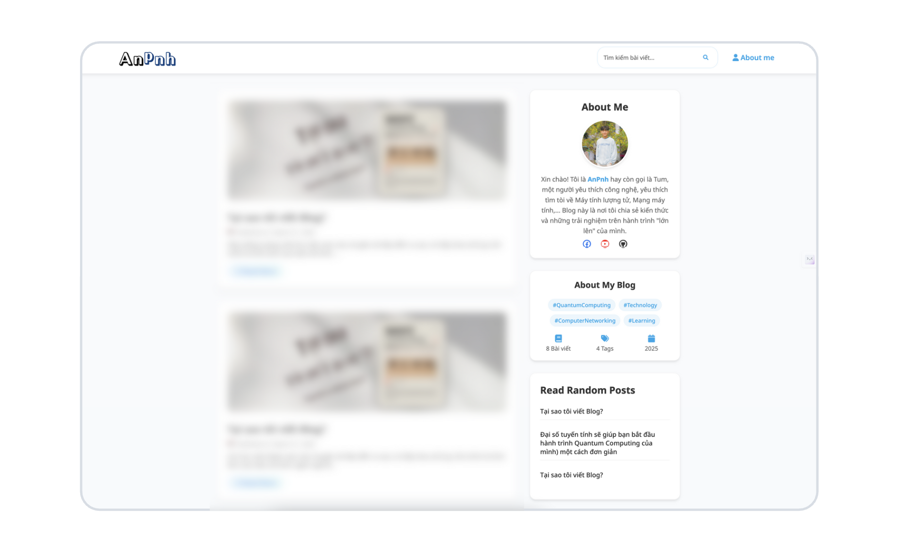

AnPnh's Blog – một góc nhỏ trực tuyến mà tôi xây dựng với tất cả niềm đam mê và tâm huyết, nơi tôi chia sẻ những góc nhìn độc đáo về cuộc sống, những trải nghiệm cá nhân, hoặc chỉ đơn giản là một cuốn sổ nhật ký số để lưu giữ hành trình tuổi trẻ của mình. Hơn hết, blog này là nơi tôi tổng hợp kiến thức từ nhiều nguồn, tôi học rất nhiều điều từ trường đại học, kinh nghiệm từ những người đi trước, và cả những bài học tự học, tất cả được chắt lọc và trình bày dễ hiểu nhất có thể với mong muốn đơn giản hóa những thứ phức tạp. Đây cũng là một không gian mở, nơi chúng ta kết nối qua kiến thức và những câu chuyện của mỗi người.
Tại sao tôi tạo ra trang Blog này?
Về An Pnh

Xin chào, Tôi là AnPnh (Phan Nguyễn Hoài An) - một sinh viên UIT đam mê công nghệ
Tính đến thời điểm hiện tại (14.04.2025), tôi đang sinh sống, học tập và làm việc tại thành phố Hồ Chí Minh, Việt Nam. Tôi hiện đang theo học chương trình cử nhân Mạng máy tính và truyền thông dữ liệu tại Đại học Công nghệ thông tin, Đại học Quốc gia thành phố Hồ Chí Minh.
Song song với việc học đại học, tôi đang theo đuổi một giấc mơ có phần "khó nhằn" – đó là lĩnh vực Quantum Computing (Tính toán lượng tử). Tôi có cơ hội đồng hành, học hỏi cùng Supervisor của mình và cùng với một anh lớn trong nhóm nghiên cứu QAC. Tại đây, tôi được tham gia vào việc nghiên cứu các vấn đề xoay quanh lĩnh vực mình yêu thích - tính toán lượng tử, đặc biệt nghiên cứu của tôi tập trung vào các thuật toán lượng tử.
Ngoài ra, tôi cũng đang góp phần nhỏ của mình trong việc hỗ trợ phát triển IO Academy – một cộng đồng toàn cầu dành cho học giả, sinh viên và người đi làm trong lĩnh vực Công nghệ Thông tin, nơi chia sẻ kiến thức, kỹ năng và kết nối những người cùng chí hướng.
Về sở thích cá nhân, tôi rất thích tìm hiểu về các công nghệ mới, đặc biệt là trong lĩnh vực Mạng máy tính. Ngay từ những ngày đầu bước chân vào ngành IT, tôi đã luôn tò mò rằng làm sao các thiết bị có thể giao tiếp được với nhau, tại sao chúng ta có thể dễ dàng sử dụng các dịch vụ Cloud, và đằng sau những dịch vụ đó là cả một hệ thống được vận hành như thế nào? Bên cạnh đó, Tính toán lượng tử là một chủ đề có độ thử thách cao và chính điều đó đã thu hút tôi. Tôi bắt đầu hành trình khám phá Quantum Computing từ tháng 6 năm 2024, nhờ vào sự hỗ trợ tận tình của Supervisor và theo dõi các khóa học từ IBM Quantum. Gần đây, tôi bắt đầu hình thành thói quen đọc sách thay vì sử dụng mạng xã hội. Những cuốn sách xoay quanh phát triển bản thân, tư duy và định hướng nghề nghiệp đang dần trở thành nguồn cảm hứng cho tôi trong việc học tập và trưởng thành. Chính việc đọc sách cũng giúp tôi cải thiện khả năng dùng từ, diễn đạt và là động lực để tôi bắt đầu hành trình viết lách – và blog này chính là nơi tôi gửi gắm những suy nghĩ, chia sẻ hành trình học tập, cũng như lan tỏa đam mê với công nghệ đến với mọi người.
Về AnPnh's Blog

Tại Blog này, tôi tập trung vào các chủ đề mà tôi hứng thú như Công nghệ thông tin, Quantum Computing, Mạng máy tính, và nhiều lĩnh vực hấp dẫn khác. Dù bạn là người đam mê công nghệ hay chỉ muốn khám phá, tôi hy vọng blog này sẽ mang đến những bài viết hữu ích, và nếu có thể thì có thể góp một phần nhỏ vào hành tình của các bạn.